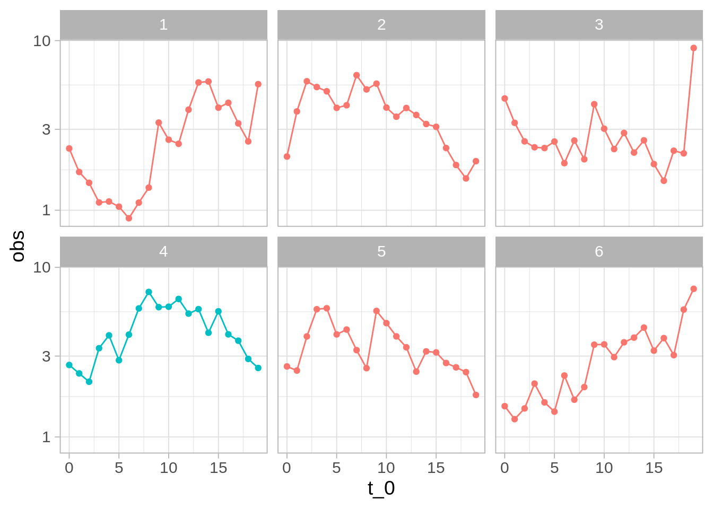
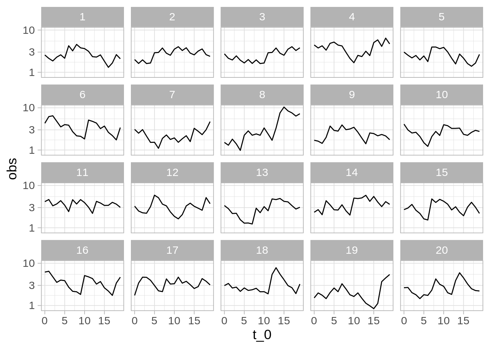
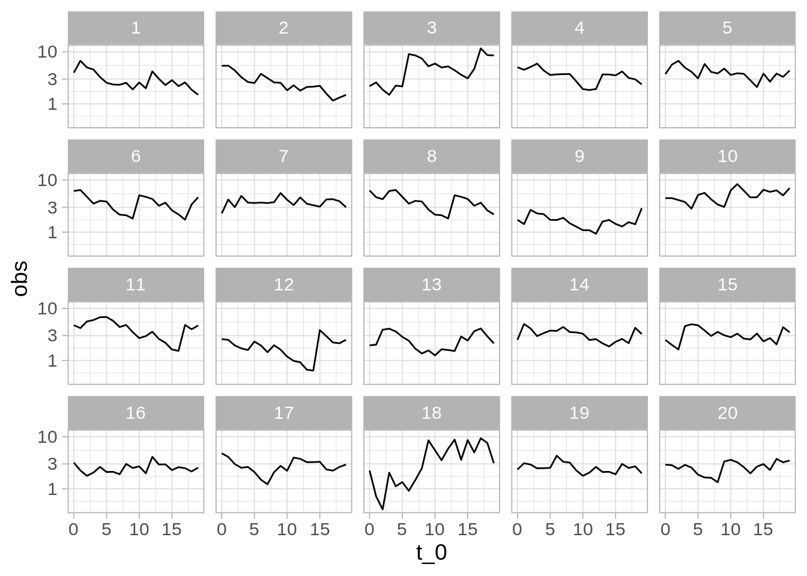
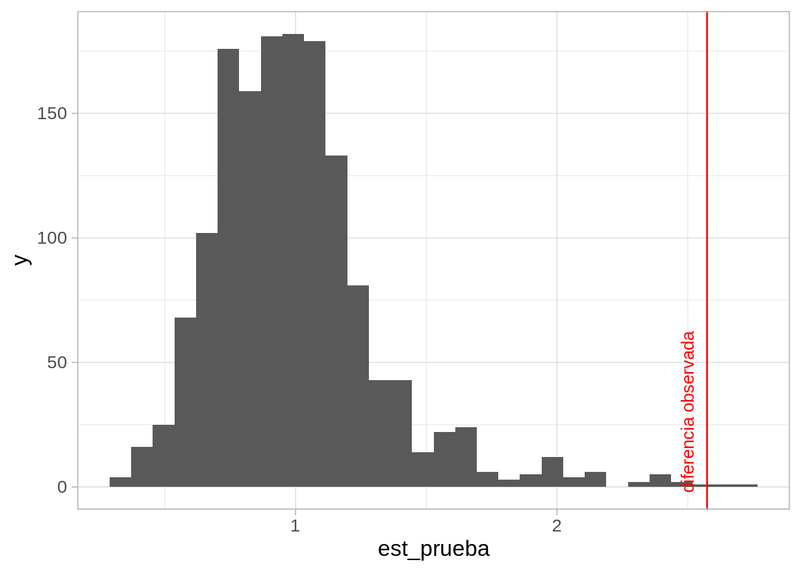

3 Introducción a pruebas de hipótesis
3.1 Variabilidad y patrones
Las primeras técnicas que veremos intentan contestar la siguiente pregunta:
- Si observamos cierto patrón en los datos, ¿cómo podemos cuantificar la evidencia de que es un patrón notable y no sólo debido a fluctuaciones en los datos particulares que tenemos? ¿Cómo sabemos que no estamos sobreinterpretando esas fluctuaciones?
Por ejemplo:
- Un sistema tiene cierto comportamiento “usual” para el cual tenemos datos históricos. El sistema presenta fluctuaciones en el tiempo.
- Observamos la última salida de nuestro sistema. Naturalmente, tiene fluctuaciones. ¿Esas fluctuaciones son consistentes con la operación usual del sistema? ¿Existe evidencia para pensar que algo en el sistema cambió?
3.2 Comparación con poblaciones de referencia
En las prueba de hipótesis, tratamos de construir distribuciones de referencia para comparar resultados que obtengamos con un “estándar” de variación, y juzgar si nuestros resultados son consistentes con la referencia o no (Box et al. (1978)).
En algunos casos, ese estándar de variación puede construirse con datos históricos.
Ejemplo
Supongamos que estamos considerando cambios rápidos en una serie de tiempo de alta frecuencia. Hemos observado la serie en su estado “normal” durante un tiempo considerable, y cuando observamos nuevos datos quisiéramos juzgar si hay indicaciones o evidencia en contra de que el sistema sigue funcionando de manera similar.
Digamos que monitoreamos ventanas de tiempo de tamaño 20 y necesitamos tomar una decisión. Abajo mostramos cinco ejemplos donde el sistema opera normalmente, que muestra la variabilidad en el tiempo en ventanas cortas del sistema.
Ahora suponemos que obtenemos una nueva ventana de datos. ¿Hay evidencia en contra de que el sistema sigue funcionando de manera similar?
Nuestra primera inclinación debe ser comparar: en este caso, compararamos ventanas históricas con nuestra nueva serie:
Código
# usamos datos simulados para este ejemplo
set.seed(8812)
historicos <- simular_serie(2000)
¿Vemos algo diferente en los datos nuevos (el panel de color diferente)?
Indpendientemente de la respuesta, vemos que hacer este análisis de manera tan simple no es siempre útil: seguramente podemos encontrar maneras en que la nueva muestra (4) es diferente a muestras históricas. Por ejemplo, ninguna de muestras tiene un “forma de montaña” tan clara.
Nos preguntamos si no estamos sobreinterpretando variaciones que son parte normal del proceso.
Podemos hacer un mejor análisis si extraemos varias muestras del comportamiento usual del sistema, graficamos junto a la nueva muestra, y revolvemos las gráficas para que no sepamos cuál es cuál. Entonces la pregunta es:
- ¿Podemos detectar donde están los datos nuevos?
Esta se llama una prueba de lineup, o una prueba de ronda de sospechosos (Wickham et al. (2010)). En la siguiente gráfica, en uno de los páneles están los datos recientemente observados. ¿Hay algo en los datos que distinga al patrón nuevo?
Código
# nuevos datos
obs <- simular_serie(500, x_inicial = last(obs$obs))
# muestrear datos históricos
prueba_tbl <- muestrear_ventanas(historicos, obs[1:20, ], n_ventana = 20)
# gráfica de pequeños múltiplos
ggplot(prueba_tbl$lineup, aes(x = t_0, y = obs)) + geom_line() +
facet_wrap(~rep, nrow = 4) + scale_y_log10()
Ejercicio: ¿cuáles son los datos nuevos (solo hay un panel con los nuevos datos)? ¿Qué implica que la gráfica que escogamos como “más diferente” no sean los datos nuevos? ¿Qué implica que le “atinemos” a la gráfica de los datos nuevos?
Ahora observamos al sistema en otro momento y repetimos la comparación. En el siguiente caso obtenemos:

Aunque es imposible estar seguros de que ha ocurrido un cambio, la diferencia de una de las series es muy considerable. Si identificamos los datos correctos, la probabilidad de que hayamos señalado la nueva serie “sobreinterpretando” fluctuaciones en un proceso que sigue comportándose normalente es 0.05 - relativamente baja. Detectar los datos diferentes es evidencia en contra de que el sistema sigue funcionando de la misma manera que antes.
Observaciones y terminología:
Llamamos hipótesis nula a la hipótesis de que los nuevos datos son producidos bajo las mismas condiciones que los datos de control o de referencia.
Si no escogemos la gráfica de los nuevos datos, nuestra conclusión es que la prueba no aporta evidencia en contra de la hipótesis nula.
Si escogemos la gráfica correcta, nuestra conclusión es que la prueba aporta evidencia en contra de la hipótesis nula.
¿Qué tan fuerte es la evidencia, en caso de que descubrimos los datos no nulos?
Cuando el número de paneles es más grande y detectamos los datos, la evidencia es más alta en contra de la nula. Decimos que el nivel de significancia de la prueba es la probabilidad de seleccionar a los datos correctos cuando la hipótesis nula es cierta (el sistema no ha cambiado). En el caso de 20 paneles, la significancia es de 1/20 = 0.05.
Si acertamos, y la diferencia es más notoria y fue muy fácil detectar la gráfica diferente (pues sus diferencias son más extremas), esto también sugiere más evidencia en contra de la hipótesis nula.
Finalmente, esta prueba rara vez (o nunca) nos da seguridad completa acerca de ninguna conclusión, aún cuando hiciéramos muchos páneles.
Pruebas de hipótesis
En su escencia, en las pruebas de hipótesis comparamos los datos de interés con una colección de datos de referencia. Nuestro interés es decidir si los datos de interés son consistentes con los datos de referencia. Veremos que hay distintas maneras de definir “consistencia”:
- Podemos preguntarnos si el proceso generador de los datos de interés es consistente con el proceso generador de los datos de referencia
- Podemos también preguntarnos por aspectos particulares del proceso generador, por ejemplo, si los datos parecen tener valores excepcionalmente grandes o excepcionalmente chicos, si tienen más dispersión que los datos de referencia, etc.
3.3 Cuantificando la distribución de referencia
En el ejemplo anterior estamos intentando dectectar cualquier desviación del comportamiento normal del sistema de una manera rigurosa. Podemos hacerlo más cuantitativo creando estadísticas resumen de las series. Por ejemplo, podríamos utilizar la variabilidad que tienen las series alrededor de su nivel general.
Código
sd_simple <- function(x){
# suavizamiento exponencial
mod <- HoltWinters(x, beta=FALSE, gamma=FALSE)
suavizamiento <- fitted(mod)[,1] |> as.numeric()
sd(x[-1] - suavizamiento)
}
referencia_tbl <- muestrear_ventanas(historicos, n_ventana = 1500) |>
pluck("lineup") |>
group_by(rep) |>
summarise(est_prueba = sd_simple(obs))
referencia_tbl |> head()# A tibble: 6 × 2
rep est_prueba
<int> <dbl>
1 1 1.08
2 2 0.843
3 3 0.934
4 4 0.830
5 5 0.799
6 6 1.20 Código
ggplot(referencia_tbl, aes(x = est_prueba)) +
geom_histogram() +
geom_vline(xintercept = sd_simple(observados$obs), colour = "red") +
annotate("text", x = 2.5, y = 30,
label = "diferencia observada", colour = "red", angle = 90)`stat_bin()` using `bins = 30`. Pick better value with `binwidth`.
Y confirmamos que en efecto el valor observado (línea roja) es uno muy extremo, y poco consistente con el comportamiento usual del sistema.
El valor p (de una cola) Se define como la probabilidad de observar este resultado, o uno más grande, suponiendo que el sistema está funcionando usualmente, y en este caso lo calculamos como:
Código
diferencia_obs <- sd_simple(observados$obs)
referencia_2 <- bind_rows(referencia_tbl,
tibble(rep = 0, est_prueba = diferencia_obs))
referencia_2 |>
mutate(mayor_obs = est_prueba > diferencia_obs) |>
summarise(valor_p = mean(mayor_obs)) |>
kable() |> kable_paper(full_width = FALSE)| valor_p |
|---|
| 0.0019987 |
Que cuantifica que es muy poco probable observar el sistema en el estado actual si fuera cierto que no ha sufrido cambios.
Una estadística de prueba es un resumen de datos, a partir del cual construimos una distribución de referencia bajo los supuestos de la hipótesis nula. Distintas estadísticas miden distintos aspectos de las diferencias que puede haber entre los datos de prueba y los de referencia.